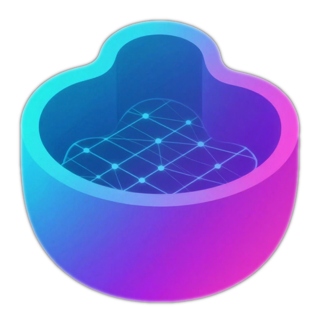

appearance · six themes
Six looks for mold studio
Shell, lexicon, icon set and every screen stay fixed — only colour, type and surface treatment move. Mocha is the palette mold ships today and Blueprint is the light counterpart you kept; Safelight is the warm darkroom family the desktop app already ships (amber accent, cold halide blue for telemetry, softer radii); Graphite and Porcelain are two further options drawn from native app chrome rather than web convention; Nebula is your own site’s palette, tokens and all. Pick one and the full app underneath switches to it.
mold
New image
Queue
My images
Styles
studio
Rain on brass
Still
Clip
a brass teapot on a rainy windowsill…
Photoreal ▼
Generate
{{ tm.name }}
{{ tm.tone }}
{{ tm.blurb }}
{{ tm.type }}
{{ title }}
{{ subtitle }}
Search or run a command…
⌘K

mold studioMake
New image
⌘N
Queue
3
My images
312
Setup
Styles
1↓
Machines
studio-rack
62%
Your fastest machine. Making images now.
Queue
3
Neon arcade, long exposure
{{ sidebarActive }}
image 2 of 4
What's this?
Your picture starts as random static and gets cleared up in 28 passes — big shapes first, fine detail last. That's why the thumbnail looks soft until the end.
{{ q.title }}
{{ q.shortStatus }}
Finished images go to My images. Closing the window keeps the queue running.
Settings
Rain on brass, 35mm
Still picture
Short clip
3-D object
Starting points
Use these settings again
Auto · ready
Simple
Scenes
{{ clipWayHint }}

mold-flux-dev-1775108462891.png
1024² · 4.0s
Save
Make 4 variations
Make bigger
•
Each block is one scene, written in your own words. Drag a block's right edge to make that scene longer, drag the block itself to reorder, and click the little marker between two blocks to say how they should meet. The whole thing is made as one continuous clip.
Scenes
drag to trim
Sound
Let mold make sound for this clip, or drop in your own
{{ promptPlaceholder }}
{{ estimate }}
{{ styleChip }} {{ styleId }} ▼
Square · 1024 ▼
Length
97f · 4.0s
{{ countChip }} ▼
Write more for me
⌘E
Generate
⌘↩
Settings
Starters
Recent
Start from a photo
zen-garden.jpg
Drop a photo to redraw it, or paste from the clipboard
How much to change it
0.55
Keep the photoStart fresh
Paint a mask
Use a face
Quality
{{ p.label }}
{{ p.meta }}
{{ s.label }}
{{ s.value }}
{{ s.low }}{{ s.high }}
Add-on looks
Add
{{ l.label }}
{{ l.weight }}
3-D object
Surface detail
Rough
Normal
Fine
octree 384 · more detail is slower
How tight to the photo
0.50
PuffierSharper edges
Simplify to
Fewer faces load faster in other apps
keep every detail
Clip
Length5s · 96 frames ▼
Smoothness24 fps ▼
Add sound
Clips take a few minutes. You'll get a still preview first.
Repeat this look
seed 4821
Keep
Surprise me
4821
Save every result
Pick a starting point and change the words — every setting comes with it.
{{ st.label }}
{{ st.note }}
{{ r.title }}
{{ r.meta }}
1 being made · 3 waiting
about 1 minute left in total
{{ pauseLabel }}
Clear finished
Stop everything
{{ qs.label }}
{{ qs.value }}
{{ qs.note }}
•
One image is made at a time so each gets your machine's full attention. Drag a row to reorder, or hit Jump the line on the one you need first. Closing the window keeps the queue running.
ImageWhat's happeningStyleMachine
{{ f.status }}
{{ f.model }}
{{ f.host }}
All
Pictures
Clips
3-D
★ Favourites 18
{{ t.label }} {{ t.count }}
Made on
studio-rack 214
this mac 98
Deleted pictures are kept for 30 days, then removed for good.
Keep for 30 days ▼
Empty now
{{ c.label }}
{{ c.count }}
＋ New album
3 selected
★ Favourite
Add tag
Add to album
Export…
Delete
History
{{ h.prompt }}
{{ h.meta }}
Use these settings
Ready to use
Browse more
Filter…
Add from file
↓
Pause
Cancel
Getting a video style ready
ltx-video-0.9.6-distilled:bf16 · [1.2G/6.8G, 12.4MiB/s, eta 8m12s]
You can keep making images while this downloads. Going to studio-rack.
Disk used by styles
37.9 GB of 512 GB
NAMEGOOD FORSPEEDSIZEMACHINE
{{ m.star }}
{{ m.goodFor }}
{{ m.speed }}
{{ m.size }}
{{ m.friendly }}
{{ m.id }}
{{ m.host }}
{{ c.friendly }}
{{ c.size }}
{{ c.id }}
{{ c.note }}
{{ c.fit }}
{{ c.btn }}
Connected · 3
Connect a machine
{{ h.label }}
making images here
{{ h.blurb }}
{{ h.mem }}{{ h.queueLabel }}
studio-rack
RTX 4090 · on your network · up 6 days
Rename
Open web UI
Forget…
Right now
LIVE
{{ t.label }}
{{ t.value }}
{{ t.note }}
Loaded and ready
★Photoreal — best qualityflux-dev:q4Unload
★Illustration & artflux2-klein:bf16Unload
Waiting on this machine
{{ f.glyph }}
{{ f.title }}
{{ f.status }}
{{ f.model }}
Storage
Styles take 37.9 GB · pictures take 12.4 GB
Keep deleted pictures for
30 days ▼
Empty trash
Downloads here
Short video clips18% · eta 8m12s
Nothing else queued to download.
Search settings…
{{ n.label }}
Look
{{ tm.label }}
{{ tm.note }}
Defaults for new images
{{ r.value }}
{{ r.label }}
{{ r.note }}
Style licences
Some styles need you to accept their terms
Accepted once per machine, before the download starts.
studio-rack ▼
{{ lic.friendly }}
{{ lic.id }} · {{ lic.terms }}
{{ lic.state }}
{{ lic.action }}
Use mold on your phone
QR
Scan this with your phone to send prompts from the couch. Both devices must be on the same network.
this mac · 192.168.1.24:7860
Updates & about
mold studio 0.9.4
up to date
Check now
Install updates automatically
files in ~/mold · rust 1.83 · metal + cuda
studio-rack
{{ statusLeft }}
1 style downloading
⌘↩Generate
⌘KSearch
SpacePause queue
Type what you want to do…
esc
{{ c.group }}
{{ c.label }}
{{ c.key }}
mold-flux-dev-1775108462891.png
1024² · 4.0s · flux-dev:q4
★ Favourite
Save a copy
Use these settings
Words used
A tea house at dusk, paper lanterns, rain on the stones, 35mm
How it was made
{{ m.label }}
{{ m.value }}
Tags
warm
night
＋ tag
Connect a machine
Point mold at another computer running mold serve to borrow its GPU.
Found on your network
workshop-pc
192.168.1.31:7860 · RTX 3090 · 24 GB
selected
Or type an address
http://192.168.1.31:7860
Make images here from now on
Cancel
Connect
Rent a GPU
Billing starts the moment it boots and stops when you stop it.
{{ pf.label }}
{{ pf.value }} ▼
Running cost
roughly 3¢ per picture at this speed
$1.44/hr
Cancel
Start it — billing begins now
✓
Brass teapot is done
Saved to My images · 14s
Show
!
One image needs a style downloaded
Short video clips · 8m12s left
View